成都市五子棋公开赛
首页
五子棋新闻
#1 成都市五子棋公开赛 作者：鱼岛岛主 发表时间：2013-11-16 22:59:10
比赛第一轮对阵
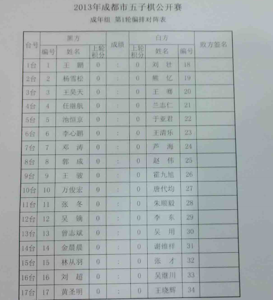
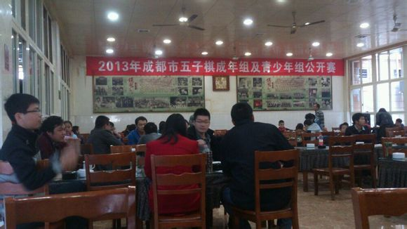
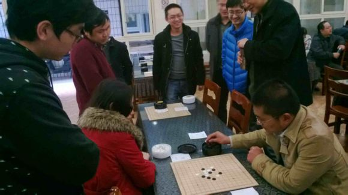
#2 Re:成都市五子棋公开赛 作者：鱼岛岛主 发表时间：2013-11-16 22:59:37
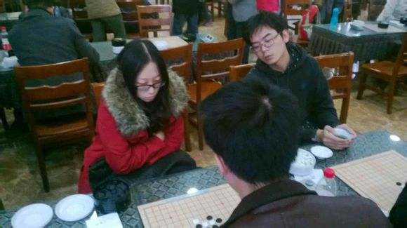
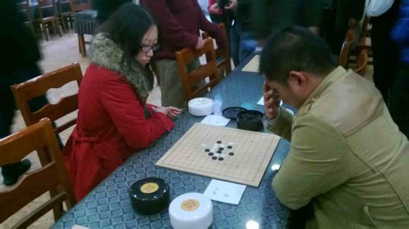
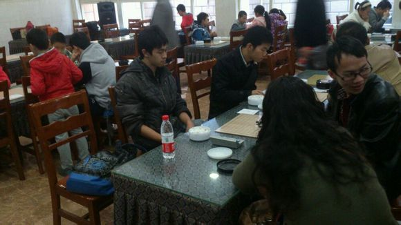
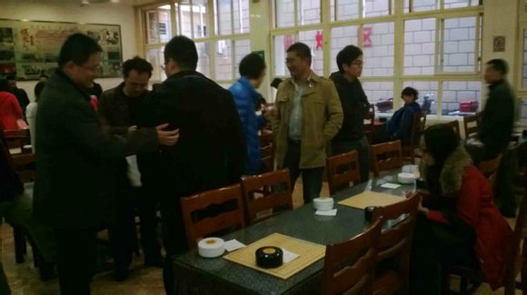
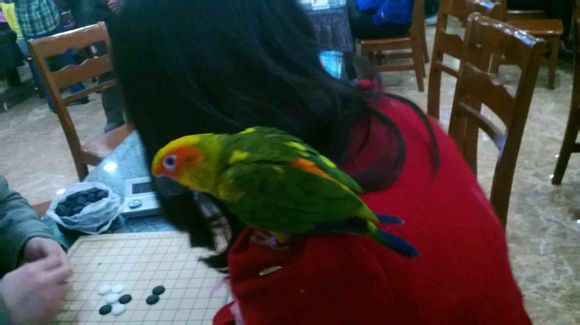［此帖子已被 鱼岛岛主 在 2013-11-16 23:01:10 编辑过］
#3 re:成都市五子棋公开赛 作者：一侠客一 发表时间：2013-11-17 0:49:33
高手不少啊
#4 Re:成都市五子棋公开赛 作者：文英 发表时间：2013-11-17 10:45:53
打酱油的 求掌棋如烟的QQ号码
#5 Re:成都市五子棋公开赛 作者：掌棋如烟 发表时间：2013-11-17 15:25:34
楼上,我扣扣 357948321 最近没挂Q,若无回复请锲而不舍的骚扰
PS,貌似没有这个比赛赛程的任何报道啊~~~ 好久没出现的大鱼也参赛了,当年的辽宁三剑客哇~~~
#6 Re:掌棋如烟【==Re:成都市五子棋公开赛==】 作者：梧桐风 发表时间：2013-11-17 20:33:45
大鱼一看就是出来打酱油的
#7 Re:成都市五子棋公开赛 作者：屏蔽 发表时间：2013-11-17 21:29:19
更神奇的是这比赛竟然有那种标准的奖状 肯定是正式组织的比赛
#8 Re:成都市五子棋公开赛 作者：鱼岛岛主 发表时间：2013-11-17 21:56:51
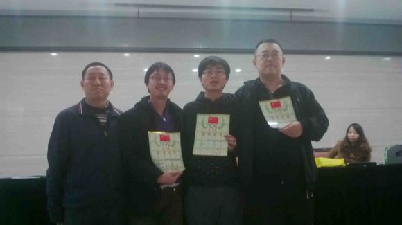
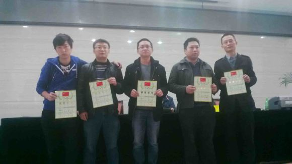
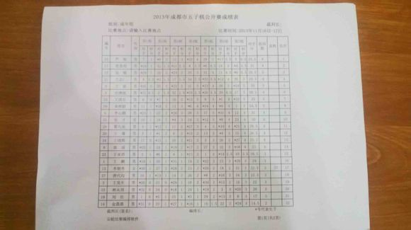
#9 Re:成都市五子棋公开赛 作者：怪 发表时间：2013-11-17 23:18:41
那鸟是？
#10 Re:成都市五子棋公开赛 作者：励精 发表时间：2013-11-17 23:46:28
成绩表能放个高清的吗？这表太糊了。
#11 Re:成都市五子棋公开赛 作者：秋叶散人 发表时间：2013-11-18 11:59:32
青少年组的成绩还是应该发一个哈！
#12 Re:成都市五子棋公开赛 作者：暴力连珠 发表时间：2013-11-19 17:29:16
最近实在是太忙了，具体的成绩表成都棋院官网上的比赛信息成绩表栏里都能看得到，笔记本也坏了还没拿去修，大家就凑合看看吧
#13 Re:成都市五子棋公开赛 作者：忧郁的双眼 发表时间：2013-11-19 19:59:37
我看到二逼淫少那只鸟了，哈哈哈！！！
#14 Re:成都市五子棋公开赛 作者：寅少 发表时间：2013-11-19 20:02:10
小眼睛- 0- 你去死
#15 Re:成都市五子棋公开赛 作者：鱼岛岛主 发表时间：2013-11-19 20:05:35
哪只鸟 哪只鸟，快说来听听。
#16 Re:成都市五子棋公开赛 作者：忧郁的双眼 发表时间：2013-11-19 20:09:11
号称五子赛场第一泡妞神器的黄头鹦鹉！！！！！